Dr. Ramasamy Paulmurugan
Professor of Radiology
Stanford University
USA

Dr. Abhijit De
Scientific Officer (G), ACTREC
Tata Memorial Centre
India

Dr. Kumaraswamy Thangaraj
Senior Principal Scientist
CCMB Hyderabad
India

Dr. Xiaowei Wang
Professor and Cardiovascular Scientist
Baker Heart & Diabetes
Institute
Australia

Dr. Rao V. L. Papineni
Adjunct Faculty
University of Kansas Medical Center
USA

Dr. Ichio Aoki
Senior Principal Investigator
QST — National Institutes
for
Quantum Science and Technology
Japan
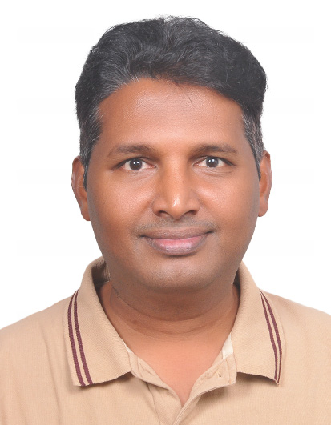
Dr. Phaneendra K. Yalavarthy
Professor
Dept. of Computational and Data Sciences
Indian
Institute of Science (IISc), Bangalore
India
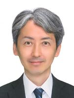
Dr. Takashi Temma
Kyoto University
Japan
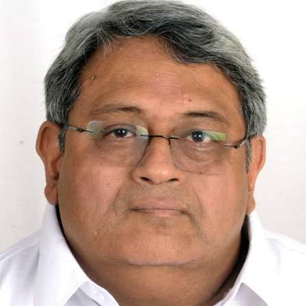
Dr. Venkatesh Rangarajan
Professor & Head
Department of Nuclear Medicine
&
Molecular Imaging
Tata Memorial Centre
Homi Bhabha National Institute
India
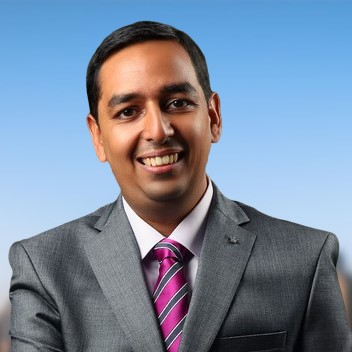
Dr. Avinash Eranki
Associate Professor
Indian Institute of Technology Hyderabad
India
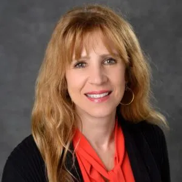
Dr. Anna Moore
Professor, Michigan State University
President, WMIS
USA
Letter of Support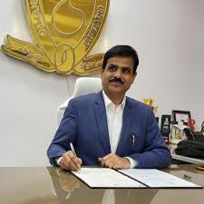
Prof. Kumar Molugaram
Vice-Chancellor
Osmania University
India
Dr. Ichio Aoki
Senior Principal Investigator
QST — National Institutes
for
Quantum Science and Technology
Japan

Dr. Mikako Ogawa
Professor
Hokkaido University
Japan
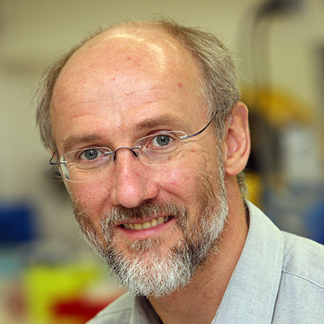
Prof. Karlheinz Peter
Deputy Director, Discovery Science
& Head, Atherothrombosis &
Vascular Biology Lab
Baker Heart and Diabetes Institute
Australia
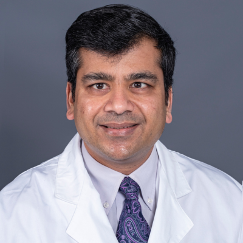
Dr. Amol M. Takalkar
Professor
Department of Radiology and Imaging Sciences
Emory
University School of Medicine
USA
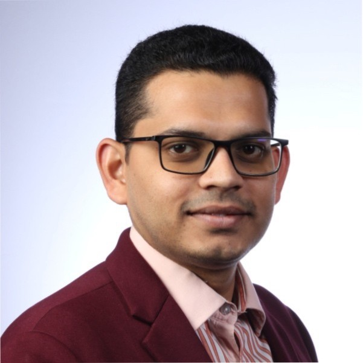
Dr. Uday Krishnamurthy
President, FASMI
Professor of Practice, Dept. of Biomedical
Engineering
Osmania University, Hyderabad, India
GE HealthCare, USA
India / USA
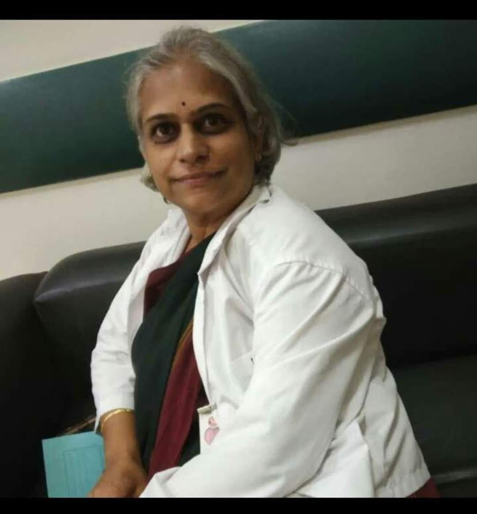
Dr. Jyotsna Rao
President, MISI
Nuclear Medicine
Apollo Hospitals
Hyderabad
India
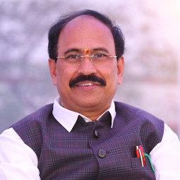
Dr. P. Chandra Sekhar
Principal
University College of Engineering
Osmania University
India
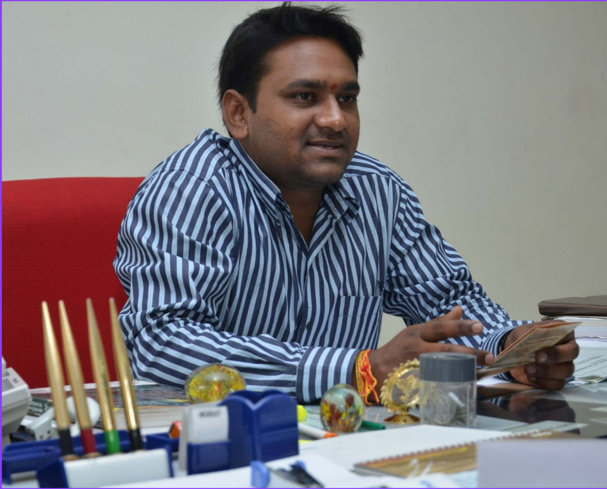
Dr. Suman Reddy
Professor
Dept. of Biomedical Engineering
UCE, Osmania University
India
Dr. Avinash Eranki
Associate Professor
Indian Institute of Technology Hyderabad
India

Anusha Malapaka
PhD Candidate
Queensland Brain Institute
Australia
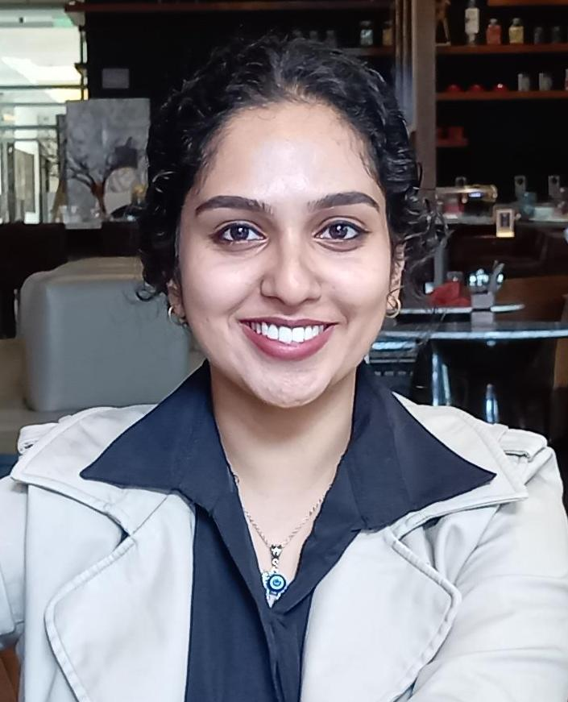
Dr. Eeshitha Chinthoju
Clinical Strategy
Dr. Reddy's Laboratories
India
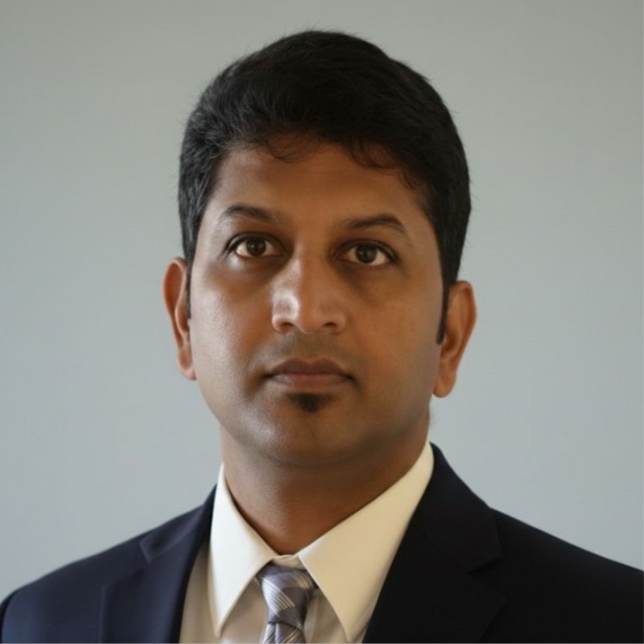
Abhinay Joshi
Director of Read Operations
Medpace
India
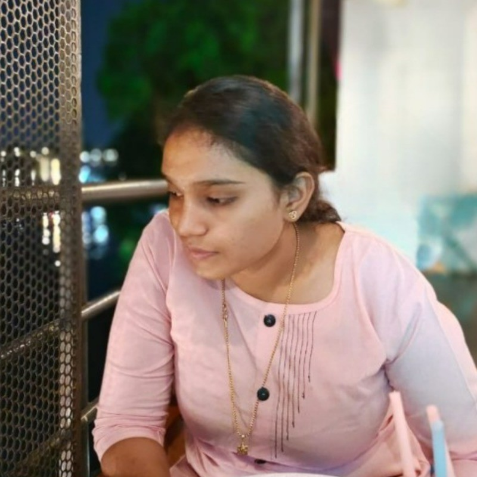
Prasanna Devika
Student
Osmania University
Hyderabad, India